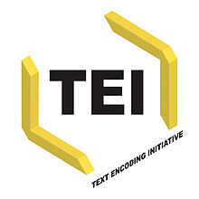
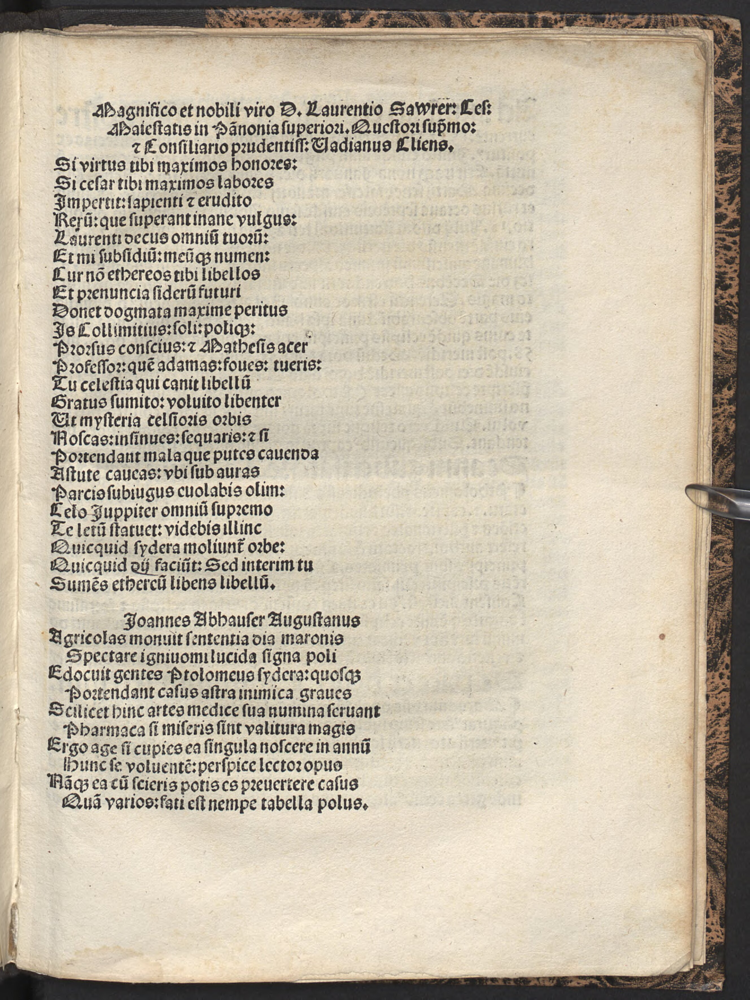

Tannstetter Collimitius 4 (Joachim Watt) 
Faksimile

Transkription
Magnifico et nobili viro D. Laurentio Sawrer: Caesaris Maiestatis in Pannonia superiori. Ductori supremo: Consiliario prudentissimo: Vadianus Cliens.
Si virtus tibi maximos honores:
Si caesar tibi maximos labores
Impertit: sapienti et erudito
Rerum: quae superant inane vulgus:
Laurenti decus omnium tuorum:
Et mi subsidium meumque numen:
Cur non aethereos tibi libellos
Et praenuntia siderum futuri
Donet dogmata maxime peritus
Is Collimitius: soli polique
Prorsus conscius et Mathesis acer
Professor quem adamas: foves: tueris:
Tu celestia qui canit libellum
Gratus sumito: volvito libenter
Ut mysteria celsioris orbis
Noscas: insinues: sequaris: et si
portendant mala quae putes cavendas
Astute caveas: ubi sub auras
Parcis subiugus evolabis olim:
Caelo Juppiter omnium supremo
Te laetum statuet: videbis illinc
Quicquid sidera moliuntur orbe:
Quidcquid dii faciunt: Sed interim tu
Sumens aethereum libens libellum.
Übersetzung
Der Untergebene Watt dem großartigen und edlen Mann D. Laurenz Saurer, dem Vorgesetzten der kaiserlichen Hoheit in Pannonien, dem höchsten Anführer, dem klügsten Rat.
Wenn dir die Tugend größte Ehren, wenn dir der Kaiser die größten Aufgaben zuteilwerden lässt, dir, dem Weisen und in den Dingen Gelehrten: Diese übertreffen den wertlosen Pöbel: Laurenz, du Zier aller der Deinen und für mich Beistand und Schutz: Warum soll dir <dann> dieser sehr kundige Tannstetter, ganz und gar vertraut mit der Erde und dem Himmel und feuriger Mathematikprofessor, den du lieb hast, unterstützt und unterhältst, nicht himmlische Büchlein und Lehrsätze schenken, die die Zukunft der Sterne verkünden? Nimm du dankbar das Büchlein an, das von himmlischen Dingen singt: lies es willig, um die Geheimnisse des höheren Gewölbes zu erkennen, eindringen zu lassen und zu verfolgen: Und wenn sie Übel ankündigen, damit du dich schlau vor dem hütest, von dem du glaubst, dass man sich hüten soll. Sobald du unter die Lüfte (???) entfliehen wirst, wird Jupiter dich an die Spitze des Himmels <vor> alle setzen: Von dort aus wirst du alles sehen, was die Sterne am Himmelsgewölbe bewegen, alles, was die Götter tun. Aber in der Zwischenzeit nimm du willig das himmlische Büchlein.
Metadaten
| Titel des Gedichts: | Magnifico et nobili viro D. Laurentio Sawrer: Caesaris Maiestatis in Pannonia superiori. Ductori supremo: Consiliario prudentissimo: Vadianus Cliens. |
| Autor der Gedichts: | Joachim Watt (Joachim Vadianus) |
| Containerwerk: | Iudicium astronomicum pro anno Ch. M.ccccc.xiii. per Magistrum Georgium Tannstetter collimitium astronomiae professorem Viennae Pannoniae editum, Nürnberg 1513 |
| Autor des Containerwerks: | Georg Tannstetter (Georgius Collimitius) |
| Gattung des Containerwerks: | astronomische Berechnungen, Voraussagen für das kommende Jahr |
| Erscheinungsjahr: | 1513 |
| Verschlagwortung: | Lob, Widmung, Buch, Himmel, Geheimnis, Natur, Sterne, Jupiter, Götter, Tod, Apotheose |